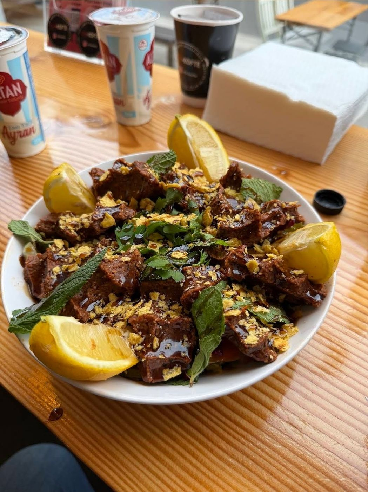
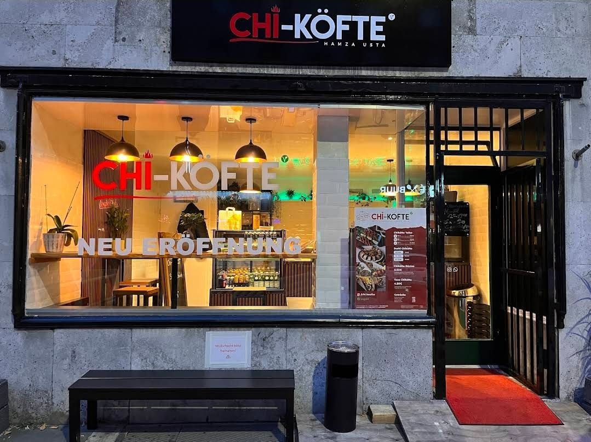
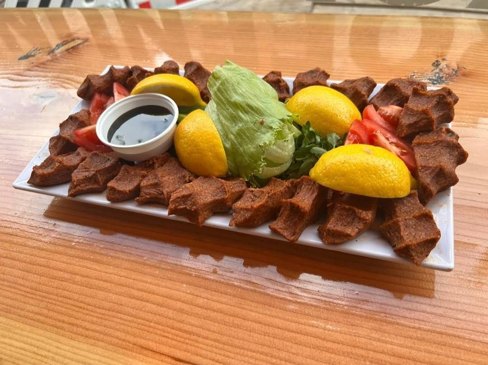
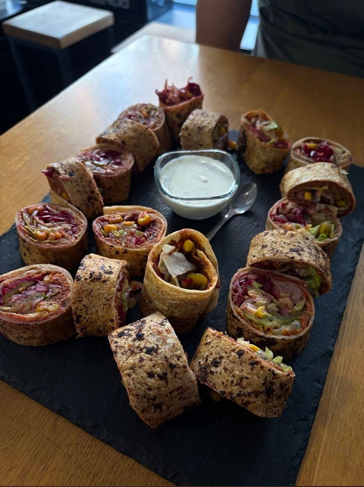
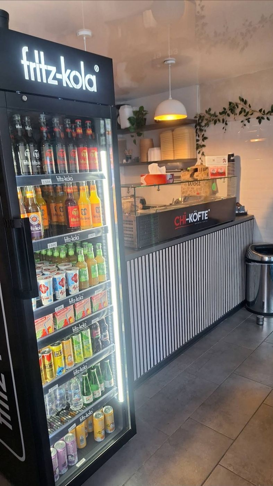
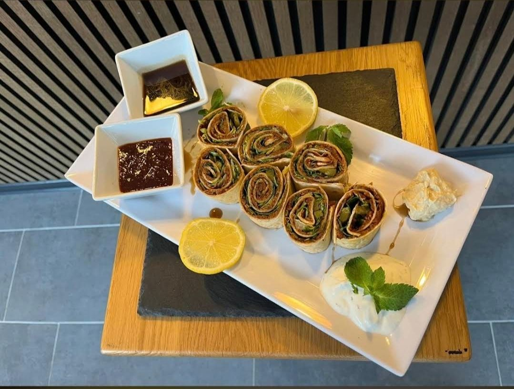
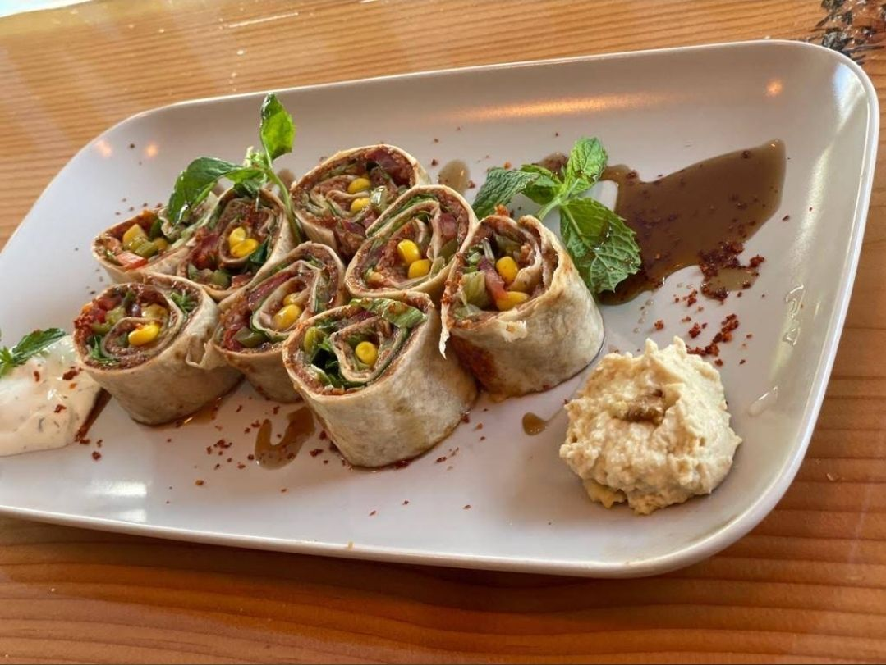

Friedrichstraße, Düsseldorf
5,0 Sterne bei über
260 Bewertungen
Probier's selbst: frisches Çiğ Köfte, würzig und vegan, im Wrap mit knackigem Salat — nach Usta-Handwerk zubereitet.

Speisekarte
Unsere Wraps
Eine Auswahl unserer Klassiker — die vollständige Karte gibt es vor Ort oder telefonisch.
So wird's gemacht
Von der Zutat bis zum Wrap
Bulgur, Tomatenmark und Gewürze
Die Basis: feiner Bulgur wird mit Tomaten- und Paprikamark sowie einer eigenen Gewürzmischung verknetet.
Von Hand lange geknetet
Erst durch langes, kräftiges Kneten von Hand entsteht die typische Konsistenz und Würze des Çiğ Köfte.
Frischer Salat und Zitrone
Knackiger Salat, Petersilie und ein Spritzer Zitrone sorgen für die Frische im Wrap.
Im Fladenbrot serviert
Mit Granatapfelsauce verfeinert und frisch im Fladenbrot gewickelt — sofort servierbereit.
Über uns
Usta-Handwerk, jeden Tag frisch
Bei Hamza Usta an der Friedrichstraße wird Çiğ Köfte nach traditionellem Familienrezept zubereitet — frisch, vegan und mit der richtigen Würze. Kein Fine-Dining-Anspruch, sondern ehrliches Street Food, das überzeugt.
Der Teig aus Bulgur, Tomatenmark und Gewürzen wird von Hand geknetet, bevor er mit knackigem Salat, Petersilie und Granatapfelsauce im Fladenbrot serviert wird — komplett ohne rohes Fleisch, ganz nach der modernen, veganen Zubereitungsart.
Das Ergebnis: über 260 Google-Bewertungen mit der Bestnote 5,0. Wer einmal hier war, kommt wieder.
Egal ob zur Mittagspause, nach Feierabend oder spontan zwischendurch: In der Küche an der Friedrichstraße wird jede Portion frisch für dich vorbereitet — nichts liegt auf Vorrat, nichts wird aufgewärmt.
Einblicke ins Lokal →
Warum Hamza Usta
Das macht unser Çiğ Köfte aus
Familienrezept
Seit Generationen weitergegeben, jeden Tag frisch angesetzt.
100 % vegan
Ganz ohne rohes Fleisch — nach moderner Zubereitungsart.
Schnell serviert
Ideal für die Mittagspause oder den schnellen Snack zwischendurch.
5,0 Sterne
267 Google-Bewertungen mit der Bestnote — Qualität, die überzeugt.
Galerie
Frisch aus der Küche





FAQ
Häufige Fragen
Ist euer Çiğ Köfte wirklich vegan?
Ja, komplett vegan — ganz ohne rohes Fleisch, nach der modernen Zubereitungsart.
Bietet ihr auch Lieferung an?
Ja, unser Çiğ Köfte gibt es vor Ort, zum Mitnehmen oder per Lieferdienst.
Wie scharf ist der Wrap "Scharf"?
Angenehm würzig mit deutlich mehr Schärfe als die Klassik-Variante — für alle, die es intensiver mögen.
Habt ihr auch Getränke?
Ja, zum Beispiel hausgemachten Ayran und türkischen Tee im Tulpenglas.
Wie sind eure Öffnungszeiten?
Wir haben täglich von 11:00 bis 22:00 Uhr geöffnet.
Kann ich telefonisch vorbestellen?
Ja, ruf uns einfach unter +49 211 25194936 an — dann ist deine Bestellung bei Abholung startklar.
Habt ihr auch etwas Süßes?
Ja, zum Abschluss gibt es zum Beispiel Baklava oder Künefe.
267 Google-Bewertungen — die Bestnote, die für sich spricht
„Bestes Çiğ Köfte weit und breit, immer frisch und der Service ist super freundlich.“
— Google-Rezension
„Schnell, lecker und ehrlich — genau das, was man nach der Arbeit braucht.“
— Google-Rezension
„Kannte Çiğ Köfte vorher gar nicht, bin jetzt aber überzeugt. Kommt definitiv wieder.“
— Google-Rezension
Kontakt
Jetzt bestellen
Vor Ort, zum Mitnehmen oder Lieferung.